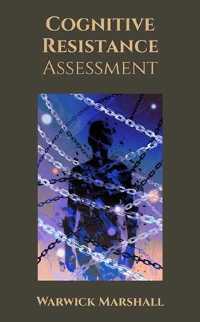

Cognitive Resistance Capacity
Seven-layer sovereignty and resistance profile—cognitive through identity, client-side only.
What is your capacity for full-spectrum sovereignty? Are you building resilience across all seven layers—cognitive, economic, material, embodied, social, AI-fluent, and identity?
This assessment measures your sovereignty capacity across seven critical layers—from cognitive sovereignty (non-negotiable foundation) through economic independence, material competence, embodied strength, social architecture, AI fluency, and identity integrity. The engine analyzes your patterns to identify strengths, gaps, and vulnerability vectors in a world where traditional career tracks are fragile and algorithmic pressure is rising.
The 7-Layer Sovereignty Framework
Developed for a post-job world where traditional career tracks are fragile, algorithmic pressure is rising, and supply chains can hiccup. Each layer builds resilience; gaps create vulnerability.
- Layer 1 — Cognitive sovereignty (non-negotiable): Formal reasoning, manipulation detection, narrative vs. facts, independent learning, critical AI use. Outcome: Trusts own judgment under uncertainty. Prevents becoming psychologically decorative.
- Layer 2 — Economic independence: Portable value creation—digital leverage, remote capability, financial literacy, small-scale entrepreneurship, negotiation. Outcome: Income optionality rather than employment dependency.
- Layer 3 — Material competence: Supply chain resilience—cooking from raw ingredients, basic repair, first aid, outdoor navigation, logistics. Outcome: Never panics when systems hiccup. Most modern adults fail here.
- Layer 4 — Embodied strength: Strength, endurance, coordination, self-defense or martial discipline, somatic regulation. Outcome: Lower victimization risk, higher psychological stability.
- Layer 5 — Social architecture: Group facilitation, conflict resolution, reading character, boundary setting, reciprocal alliances. Outcome: Can form functional micro-communities. That's future wealth.
- Layer 6 — AI fluency (not dependence): AI as tractor (multiplies labor) not oracle (replaces thinking). Understands model failure, verification, automation pipelines. Outcome: 10× productivity without cognitive atrophy.
- Layer 7 — Identity integrity: Self-authorship, long attention span, solitude tolerance, values clarity, purpose not tied to external validation. Outcome: Low susceptibility to digital hive pressure.
What you'll discover:
- 7-Layer Profile: Your strength and gaps across each sovereignty layer
- Your Cognitive Band: Where you fall in the IQ/cognitive complexity spectrum (based on thinking patterns, not formal testing)
- Your Subclass: Specific patterns within your band (e.g., "Fluency Addict," "Mirror Loop Risk," "Sovereignty Core")
- Your Attachment Mode: How you relate to AI (Tool, Companion, Authority, or Independent)
- Your Vulnerability Risks: Top areas where you're most at risk for dependency or identity drift
- Your Sovereign Split Position: Are you in the 80% Queue, 16% Compromising, or 4% Core?
- Your Resistance Capacity Score: 0-100 rating of your ability to resist cognitive hijack and maintain independent thought
- Personalized Action Plan: Layer-specific counter-structures to maintain or build sovereignty
- Export: JSON/CSV output for AI integration
Assessment Structure: This multi-dimensional evaluation consists of 5 sections covering AI Usage, Cognitive Style, Attachment & Identity, Sovereignty Indicators, and Resilience Layers (economic, material, embodied, social). Estimated time: 25-35 minutes. All computation happens client-side for privacy—no data is sent to servers.
Ready to map your sovereignty profile? Begin the assessment below—or explore Manipulation Defense Decoder and Your Sovereignty Paradigm for related tools.
Methodology
- Belief Mastery: Belief architecture, pattern recognition, calibrated change.
- Sovereign of Mind: Sovereignty, consent, and authorship in decision-making.
- Distortion Codex: Distortion detection, reality testing, and corrective clarity.
Disclaimers & notices for this tool are listed on the home page.